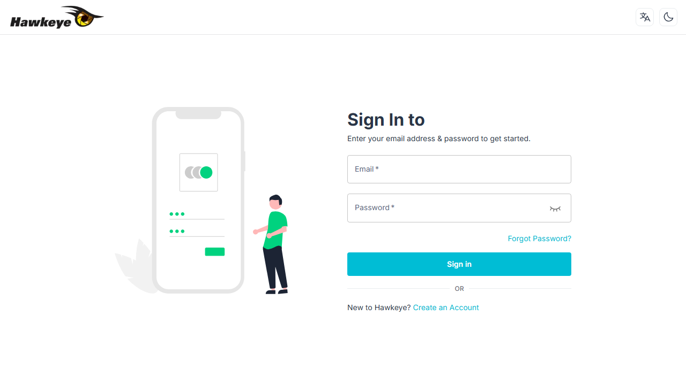
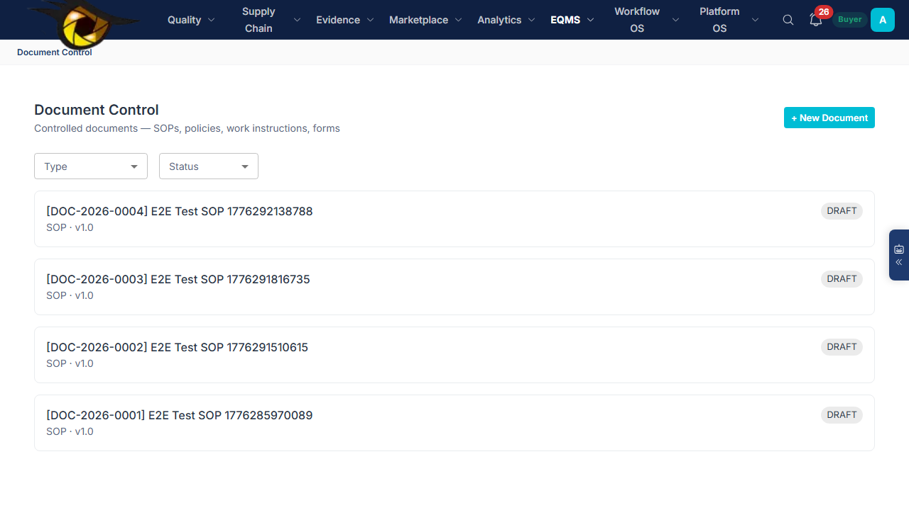
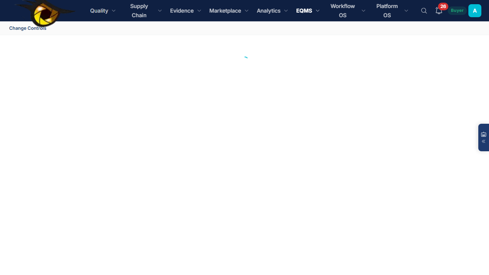
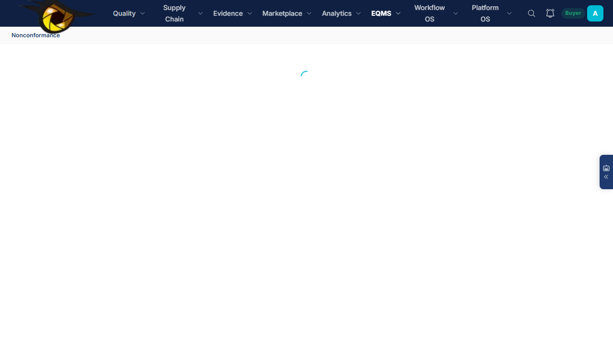
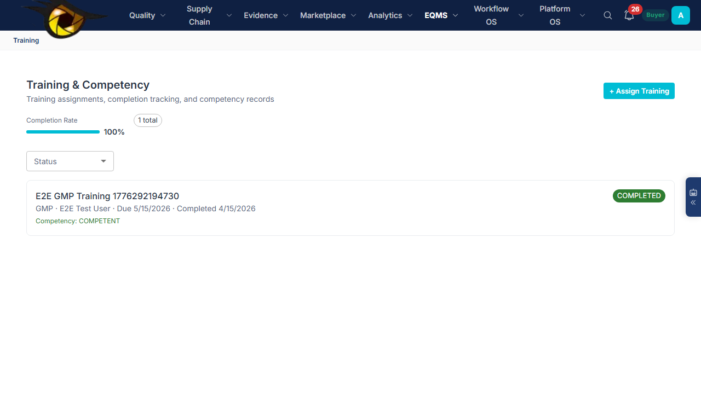
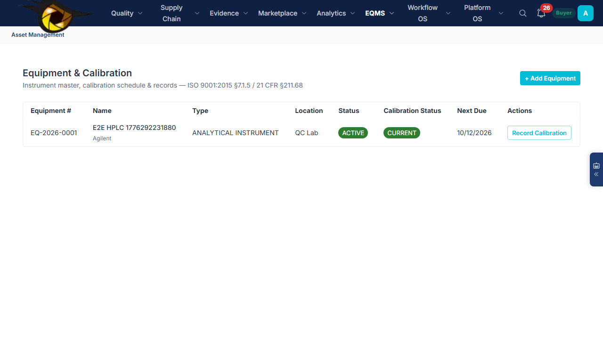
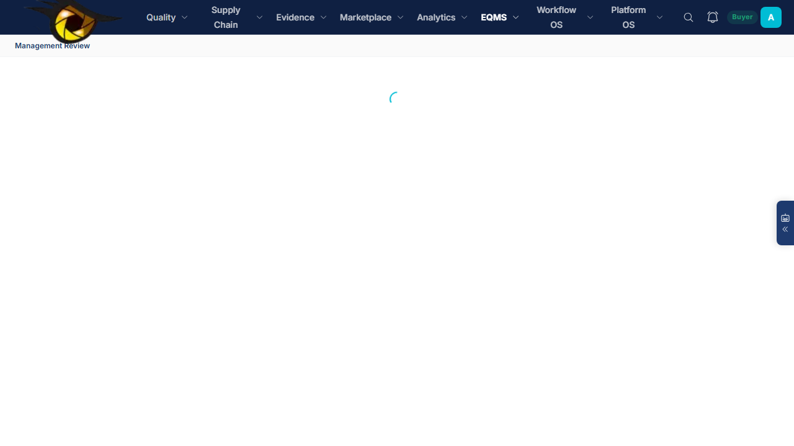

HawkEye User Guide
API Manufacturer — Full EQMS + Internal & External Audit
Customer Type: Supplier (API Manufacturer) · Full EQMS · 13 Active Modules
Version 1.0April 2026Confidential
Table of Contents
- About This Guide
- Platform Overview & Module Map
- Getting Started — Setup & Configuration
- Module Guide: Document Control
- Module Guide: Change Control
- Module Guide: Deviation / Non-Conformance
- Module Guide: Complaint Management
- Module Guide: Training Management
- Module Guide: Equipment / Calibration
- Module Guide: Management Review
- Module Guide: Supplier Audit (External)
- Module Guide: Internal Audit
- Cross-Module Integration: The Quality Event Cascade
- Quick Reference
1. About This Guide
This guide is for API Manufacturers operating as a supplier who need a complete Electronic Quality Management System (EQMS) including both internal self-audits and external audits from customers.
Your configuration: Full EQMS — all 7 quality modules active, plus the audit engine for both internal and external (supplier) audits. 13 modules total.
| Setting | Value |
|---|
| Industry Profile | PHARMA_GMP |
| Module Pack | cGMP + EQMS |
| Active Modules | 13 of 15 (everything except Chain of Custody and Transaction Review) |
| Audit Types | External (customer audits you), Internal (self-inspection), Surveillance |
| Compliance Standards | ICH Q7, ICH Q10, FDA 21 CFR 211, ISO 9001:2015 |
2. Platform Overview & Module Map
Your EQMS has 13 active modules organized into 3 tiers:
Tier 1: Core Quality Modules (always-on)
📄 Document Control
SOPs, policies, work instructions. Versioning, approval workflows, periodic review.
ON/document-control
🔄 Change Control
Process/equipment/material changes. Impact assessment, approval, verification.
ON/change-controls
⚠️ Deviation / NC
Planned & unplanned deviations. Investigation, RCA, impact assessment, disposition.
ON/nonconformance
Tier 2: Quality Operations
📢 Complaint Manager
Customer/regulatory complaints. Investigation, regulatory reporting flags, CAPA linkage.
ON/complaint-manager
🎓 Training
Training assignments, competency tracking, assessment, recurring training.
ON/training
🔧 Equipment / Cal
Equipment master, calibration scheduling, history, out-of-tolerance handling.
ON/asset-management
Tier 3: Governance & Audit
📊 Management Review
ISO 9001 clause 9.3. KPI aggregation, action items, QMS adequacy assessment.
ON/management-review
🔍 Audit Management
8-phase workflow for external & internal audits. Templates, milestones, reporting.
ON/audits
✅ CAPA
Corrective & preventive actions. 18-status lifecycle with RCA, effectiveness checks.
ON/buyer/capas
3. Getting Started — Setup & Configuration
Step 1: Login & Initial Configuration

Figure 1: Login page — enter your email and password to access the platform
Step 2: Enable All EQMS Modules
As Tenant Admin, navigate to /admin/module-config and enable all modules:
| Module | Status | Purpose |
|---|
| AUDIT_MANAGEMENT | ON | Internal + external audit workflow |
| DOCUMENT_CONTROL | ON | SOP lifecycle management |
| CHANGE_CONTROL | ON | Process change management |
| CAPA_MANAGEMENT | ON | Corrective & preventive actions |
| EVENT_MANAGEMENT | ON | Deviation/NC + complaints |
| TRAINING_MANAGEMENT | ON | Training & competency tracking |
| RISK_MANAGEMENT | ON | Risk register & FMEA |
| MANAGEMENT_REVIEW | ON | Periodic quality review |
| ASSET_MANAGEMENT | ON | Equipment & calibration |
| SUPPLIER_QUALITY | ON | Supplier profiles & risk scoring |
| REGULATORY_INTEL | ON | FDA inspection data |
| AI_ASSISTANT | ON | AskHawk knowledge assistant |
| RFQ_PROCUREMENT | ON | Auditor procurement |
Step 3: Set Up Users
| Role | Who | Access |
|---|
| buyer (QA Manager) | Quality Assurance leadership | All modules + audit creation + management review |
| supplier (Site QA) | Site-level quality teams | Respond to audits, report deviations, complete training |
| auditor (Internal) | Internal audit team | Conduct internal audits, review questionnaires, log findings |
| tenant_admin | Quality System Owner | Full admin access, module config, user management |
4. Module Guide: Document Control
Manages the lifecycle of all controlled documents — SOPs, policies, work instructions, specifications, protocols.

Figure 2: Document Control page — filter by status and document type
Document Lifecycle
DRAFT→
UNDER_REVIEW→
APPROVED→
EFFECTIVE→
SUPERSEDED or
WITHDRAWN
How to Use
1
Create a document
Click "+ New Document". Enter title, type (SOP/Policy/Work Instruction/etc.), scope. Auto-assigns DOC-YYYY-NNNN number.
2
Route for approval
Add approval steps (e.g. Department Head → QA Manager). Each approver reviews and signs electronically.
3
Publish
Once approved, click "Publish" to make the document EFFECTIVE. Set the effective date and review due date.
4
Supersede (new version)
When a revision is needed, click "Supersede". A new version is created as DRAFT; the current version moves to SUPERSEDED.
Training trigger: If requiresTrainingOnUpdate is enabled, publishing a new version automatically triggers a training assignment for all users associated with that document's department.
| Document Types | Auto-numbering |
|---|
| SOP, Policy, Work Instruction, Form, Specification, Protocol, Report Template, Guideline, Regulatory Submission, Custom | DOC-2026-0001, DOC-2026-0002, ... |
5. Module Guide: Change Control

Figure 3: Change Control page — track process, equipment, and material changes
Change Control Lifecycle
DRAFT→
SUBMITTED→
IMPACT_ASSESSMENT→
UNDER_REVIEW→
APPROVED→
IMPLEMENTATION→
VERIFICATION→
CLOSED
How to Use
1
Initiate change request
Select type (Process/Equipment/Material/Document/System), risk level (Low/Medium/High/Critical), describe the change and justification.
2
Impact assessment
Cross-functional team evaluates: affected areas, regulatory impact, validation requirements.
3
Approve & implement
Multi-step approval workflow. After approval, track implementation against planned date.
4
Verify & close
Verify the change achieved its intended outcome. Conduct effectiveness check. Close the CCR.
6. Module Guide: Deviation / Non-Conformance

Figure 4: Deviation / NC Manager — investigate, assess impact, dispose, link to CAPA
Deviation Lifecycle
REPORTED→
UNDER_ASSESSMENT→
UNDER_INVESTIGATION→
PENDING_DISPOSITION→
PENDING_CAPA_DECISION→
CAPA_REQUIRED→
PENDING_CLOSURE→
CLOSED
How to Use
1
Report deviation
Anyone can report. Classify as PLANNED or UNPLANNED. Set category (Process/Equipment/Material/Environmental/Laboratory/etc.) and classification (Critical/Major/Minor). Auto-numbers: DEV-2026-XXXX.
2
Assess impact
Evaluate: product quality impact, patient safety impact, batch disposition (Release/Reject/Rework/Quarantine), regulatory impact.
3
Investigate root cause
Select RCA method (5-Why, Fishbone, Fault Tree, Pareto). Document root cause and root cause category.
4
Dispose & decide CAPA
Set batch disposition. Decide if CAPA is required. Link to existing CAPA records if applicable.
7. Module Guide: Complaint Management
Figure 5: Complaint Manager — severity coding, MDR flags, CAPA linkage
Complaint Lifecycle
OPEN → UNDER_INVESTIGATION → PENDING_CAPA → CAPA_IN_PROGRESS → PENDING_CLOSURE → CLOSED
Key Features
- 8 complaint types (Product Quality, Labeling, Packaging, Delivery, Service, Safety, Regulatory, Other)
- 6 sources (Customer, Patient, Regulator, Internal, Distributor, Other)
- Medical Device Report (MDR) flag for regulatory-reportable events
- Regulatory reporting required flag with tracking
- Auto-numbering: CMP-2026-XXXX
- Direct CAPA linkage
8. Module Guide: Training Management

Figure 6: Training Management — assign, track, assess competency
Training Lifecycle
ASSIGNED → IN_PROGRESS → COMPLETED (or OVERDUE / WAIVED / FAILED)
Key Features
- 9 training types (Onboarding, SOP Read & Understand, Regulatory, GMP, Safety, Technical, Process, Quality System, Custom)
- 4 competency levels (Aware, Competent, Proficient, Expert)
- 5 assessment types (Written Test, Practical, Observation, Sign-Off, Oral Exam)
- Recurring training with auto-scheduling
- Linked to Document Control (SOP revision triggers retraining)
9. Module Guide: Equipment / Calibration

Figure 7: Equipment Master — calibration scheduling, history, status tracking
Key Features
- 6 equipment types (Analytical Instrument, Production Equipment, Utility, Measuring Device, IT System, Other)
- 6 statuses (Active, Inactive, Under Calibration, Out of Service, Retired, Quarantined)
- Calibration scheduling with frequency-based auto-due dates
- Calibration history with pass/fail/conditional results
- Calibration status alerts (Current, Due Soon, Overdue)
- Auto-numbering: EQ-2026-XXXX
10. Module Guide: Management Review

Figure 8: Management Review — ISO 9001 clause 9.3 compliant
Key Features
- Review types: Annual, Quarterly, Ad Hoc, Post-Incident, Regulatory
- ISO 9001:2015 inputs: audit results, customer feedback, process performance, CAPA trends
- QMS adequacy assessment: Adequate / Needs Improvement / Inadequate
- Action items with owner, due date, priority, and status tracking
- Auto-numbering: MR-2026-XXXX
11. Module Guide: External Supplier Audit
As a supplier, you receive audits from your customers. The 8-phase workflow runs the same as described in the Pharma Audit guide. Your role is to:
- Receive and accept intimation letters
- Complete pre-audit and execution questionnaires
- Provide evidence documents
- Submit CAPA plans for findings
- Track CAPA implementation to closure
12. Module Guide: Internal Audit
Use the same 8-phase audit workflow for self-inspections. Create an audit where your organization is both the buyer (initiator) and the supplier (site being audited). Assign an internal auditor.
Assessment Type: Select "Internal" or "Self" when creating the audit. This uses the same templates and workflow but flags the audit as an internal self-inspection for regulatory purposes (EU GMP Chapter 9, ISO 9001 clause 9.2).
13. Cross-Module Integration: The Quality Event Cascade
The power of a full EQMS is that modules are interconnected. A single quality event can cascade across multiple modules. Here's a real-world example:
Scenario: Temperature excursion in cold storage
1
Deviation Reported
Warehouse operator reports temperature excursion → DEV-2026-0001 created in /nonconformance
↓
2
Impact Assessed
QA assesses: batch quarantined, root cause = HVAC relay failure (Equipment)
↓
3
Equipment Record Updated
Go to /asset-management. HVAC unit flagged as OUT_OF_SERVICE. Calibration overdue. Relay replaced → new calibration recorded.
↓
4
Customer Complaint Logged
Customer reports quality concern → CMP-2026-0001 linked to deviation DEV-2026-0001 in /complaint-manager
↓
5
Change Control Raised
Engineering raises CCR-2026-0001: "Add dual-relay failover to cold storage HVAC" in /change-controls
↓
6
SOP Updated
Preventive Maintenance SOP revised → new version DOC-2026-0005 published in /document-control
↓
7
Training Assigned
Warehouse team assigned retraining on updated PM SOP in /training
↓
8
Management Review
All data flows into quarterly review. QMS adequacy assessed. Action items tracked in /management-review
Single source of truth: Every record links back — deviation → complaint → equipment → change → document → training → management review. No spreadsheets, no duplicate data, complete traceability for regulatory inspections.
14. Quick Reference
All Module Pages
| Module | URL Path | API Endpoint | Auto-Number |
|---|
| Audit Summary | /audits | /api/audit-requests/* | HAWK-NNNNNNNN |
| Request Audit | /request-audit | POST /api/buyer/audit-request | — |
| Document Control | /document-control | /api/document-control | DOC-YYYY-NNNN |
| Change Control | /change-controls | /api/universal/change-controls | CCR-YYYY-NNNN |
| Deviation / NC | /nonconformance | /api/deviations | DEV-YYYY-NNNN |
| Complaint Manager | /complaint-manager | /api/complaints | CMP-YYYY-NNNN |
| Training | /training | /api/training-records | — |
| Equipment / Cal | /asset-management | /api/equipment | EQ-YYYY-NNNN |
| Management Review | /management-review | /api/management-reviews | MR-YYYY-NNNN |
| Risk Register | /risk-register | /api/risk-items | — |
| CAPA | /buyer/capas | /api/capa-v2 | — |
URLs & Credentials
| Frontend | https://hawkeye-frontend-dev-chi.vercel.app |
| Backend API | https://hawkeye-backend-dev.vercel.app |
| API Docs | https://hawkeye-backend-dev.vercel.app/api-docs |
E2E Tests
cd frontend
npx playwright test --config=playwright.live.config.ts eqms-modules — test all 7 EQMS modules
npx playwright test --config=playwright.live.config.ts audit-lifecycle — test audit flow
npx playwright test --config=playwright.demo.config.ts — record demo video
Support
For technical support, contact your HawkEye account manager or email support@hawkeyesmart.com.
HawkEye Platform — API Manufacturer User Guide (Full EQMS + Audit)
Version 1.0 · April 2026 · Confidential
Export: Ctrl+P → A4 Portrait → Background Graphics ON → Save as PDF